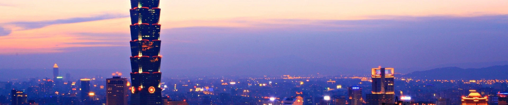
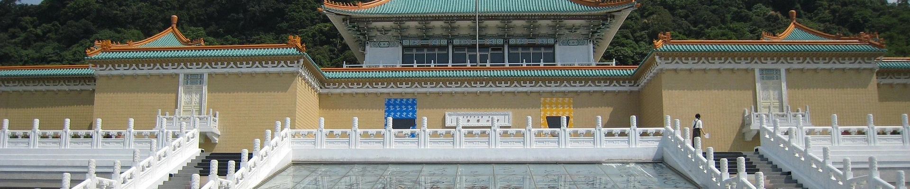
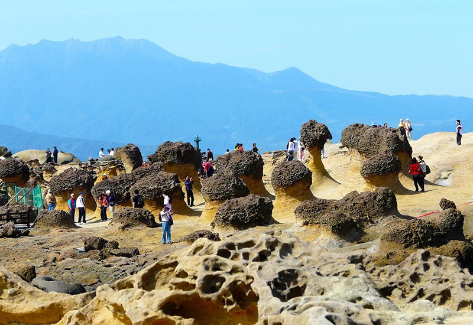
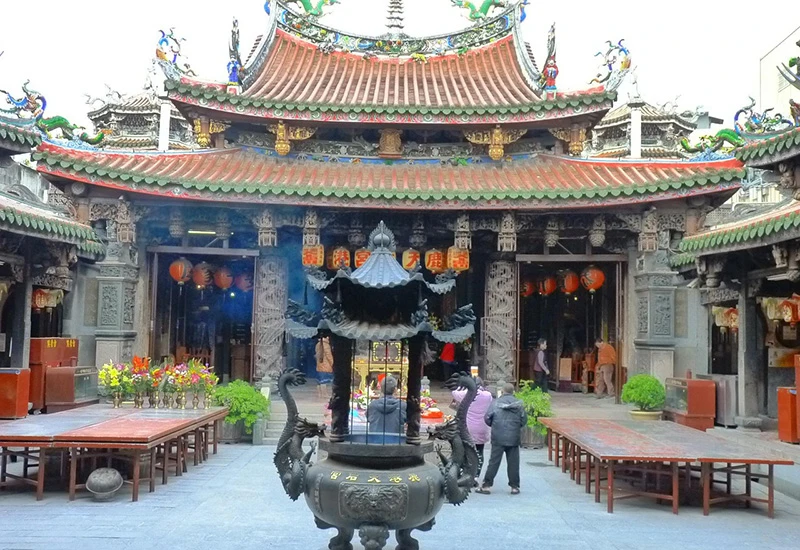
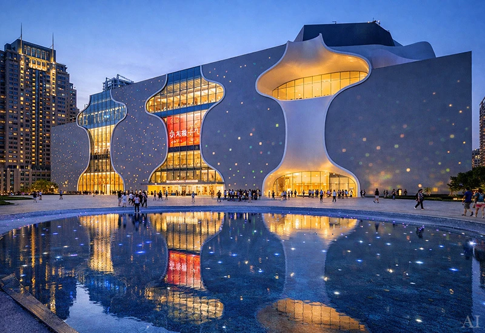
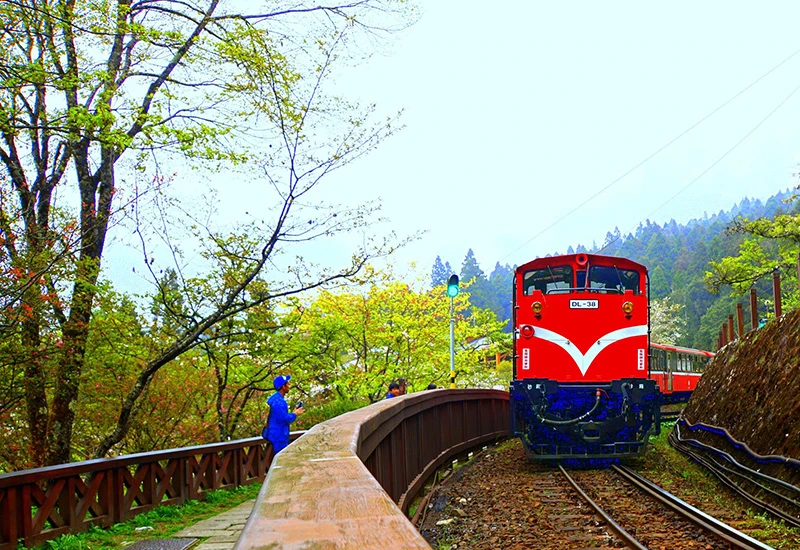
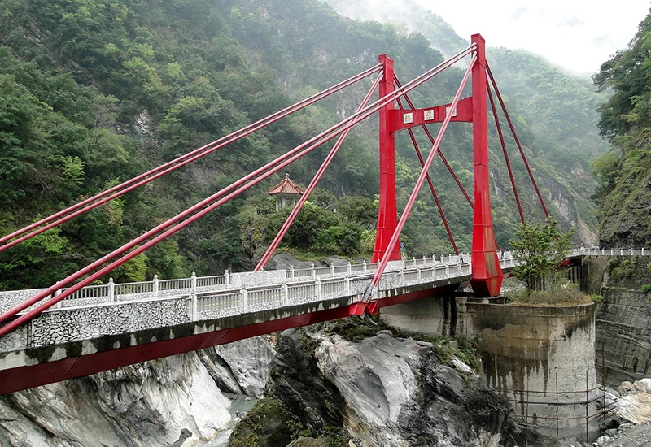

北部景點

淡水老街
淡水老街位於淡水河畔,是北台灣非常受年輕人歡迎的旅遊景點之一。老街沿著河岸延伸,結合海景、街頭小吃與歷史建築,整體氛圍既悠閒又充滿活力。走在街道上,可以看到許多特色店家與文創小店,非常適合邊逛邊拍照打卡。傍晚時分更是淡水最迷人的時刻,夕陽映照在河面上,形成著名的淡水夕照景色。
來到淡水老街,當然不能錯過各式在地美食,例如知名的阿給、魚丸湯與巨無霸冰淇淋,都是許多遊客必吃的經典小吃。沿著河岸散步,也可以欣賞街頭藝人表演或騎乘自行車欣賞河景。整體而言,淡水老街不僅是體驗台灣在地文化的好地方,也是一個結合美食、景色與休閒氛圍的熱門旅遊地標。

野柳國家公園
野柳地質公園位於新北市萬里區,是北海岸最具代表性的自然景點之一。這裡因長期受到海浪侵蝕與風化作用,形成許多奇特的岩石地形,其中最有名的就是造型像皇冠的「女王頭」,也是許多遊客必拍的經典地標。走在沿海步道上,可以看到各種像蘑菇、燭台或動物造型的岩石,非常有趣又充滿大自然的藝術感。
對年輕人來說,野柳不只是看石頭的地方,更是一個超好拍照的自然景點。海岸線搭配特殊岩石地貌,隨手一拍都很有特色,尤其天氣晴朗時海天一線的景色十分壯觀。來到這裡除了欣賞地質奇景,也能感受北海岸的海風與遼闊視野,是兼具自然知識與打卡拍照的熱門旅遊景點。
中部景點

鹿港天后宮
鹿港天后宮位於彰化縣鹿港鎮,是台灣歷史最悠久且最具代表性的媽祖廟之一,建於明末清初,至今已有數百年歷史。廟宇建築融合閩南傳統工藝,從精緻的木雕、石雕到屋頂剪黏裝飾,都展現出高度的藝術價值與文化底蘊。走進廟埕,可以感受到濃厚的宗教氛圍與歷史氣息,是鹿港地區重要的信仰中心。
來到鹿港天后宮,除了參拜祈福,也能欣賞細緻的古建築之美。廟前廣場常聚集許多遊客與香客,周邊街道則有許多販售傳統小吃與伴手禮的店家,如麵線糊、糕餅與古早味點心等。整體環境結合宗教文化、歷史建築與在地生活風貌,是鹿港最具代表性的文化觀光景點之一。

臺中國家公園
臺中國家歌劇院位於台中市西屯區,是台灣最具代表性的文化藝術地標之一,由日本建築師伊東豊雄設計。建築以獨特的「曲牆結構」打造流動般的空間形態,被譽為世界級建築作品。館內設有大劇院、中劇院與小劇場,長期舉辦音樂會、戲劇與各類表演藝術活動,是結合建築美學與藝文展演的重要場域。
歌劇院外觀充滿未來感與藝術氛圍,廣場與水池倒影形成極具特色的景觀,也是熱門的拍照與打卡地點。館內除了展演空間外,還設有空中花園、藝文商店與餐飲空間,遊客在欣賞建築設計之餘,也能感受豐富多元的文化體驗,是來到台中不可錯過的重要景點。
南部景點

阿里山鐵路
阿里山森林鐵路是台灣最具代表性的高山鐵道之一,興建於日治時期,最初為運送林木而設,後來轉型為觀光鐵路。鐵路自嘉義市一路蜿蜒上升至阿里山山區,沿途穿越森林、茶園與雲霧繚繞的山谷,展現台灣高山自然景觀的壯麗風貌。
列車行駛途中會經過多座隧道、橋樑與特殊的「之字形折返」路線,是世界少見的高山鐵道工程。旅客搭乘列車緩慢前行,能近距離欣賞山林景色與四季變化,尤其清晨雲海與日出景色更是令人難忘,使阿里山鐵路成為結合歷史文化與自然景觀的經典旅遊體驗。
墾丁國家公園
墾丁國家公園位於台灣最南端的屏東縣,是台灣第一座成立的國家公園。園區涵蓋海岸、珊瑚礁、草原與熱帶森林等多樣自然景觀,擁有豐富的生態資源與壯麗的海岸地形。清澈的海水、潔白的沙灘與蔚藍天空相互映襯,展現出南台灣獨特的海洋風貌。 園區內著名景點包括鵝鑾鼻燈塔、南灣與龍磐公園等地,不僅能欣賞遼闊海景,也適合進行浮潛、戲水與自然探索。每年吸引大量旅客前來感受陽光、海洋與自然景觀交織而成的熱帶旅遊魅力,是台灣極具代表性的觀光勝地。
東部景點

太魯閣國家公園-靳珩橋
太魯閣國家公園位於台灣東部的花蓮縣,以壯麗的峽谷地形與大理石岩壁聞名,是台灣最具代表性的自然景觀之一。園區內的太魯閣峽谷由立霧溪長年侵蝕切割而成,高聳的山壁與蜿蜒溪流形成壯觀的峽谷景色,展現大自然鬼斧神工的地貌。
園區內擁有多條知名步道與景點,如長春祠、燕子口與砂卡礑步道等,沿途可欣賞峽谷、溪流與山林景觀。遊客在此不僅能體驗壯闊的自然風貌,也能深入了解台灣東部獨特的地質與生態環境。
國際熱氣球嘉年華-鹿野高台
鹿野高台位於臺東縣鹿野鄉,是東台灣著名的觀景與休閒景點之一。高台地勢開闊,可俯瞰遼闊的花東縱谷與周圍翠綠田野,視野相當遼闊。園區環境寬廣舒適,設有觀景平台與大片草地空間,讓遊客能在此散步、休憩並欣賞壯麗的山谷景色。
每年夏季,鹿野高台也是臺灣國際熱氣球嘉年華的主要舉辦地。活動期間,來自世界各地的熱氣球在清晨與傍晚時分緩緩升空,形成繽紛壯觀的天空景象。現場除了熱氣球繫留體驗與飛行展示外,夜晚還會舉辦光雕音樂會,讓燈光與熱氣球交織出夢幻畫面,使鹿野高台成為台東最具代表性的觀光景點之一。